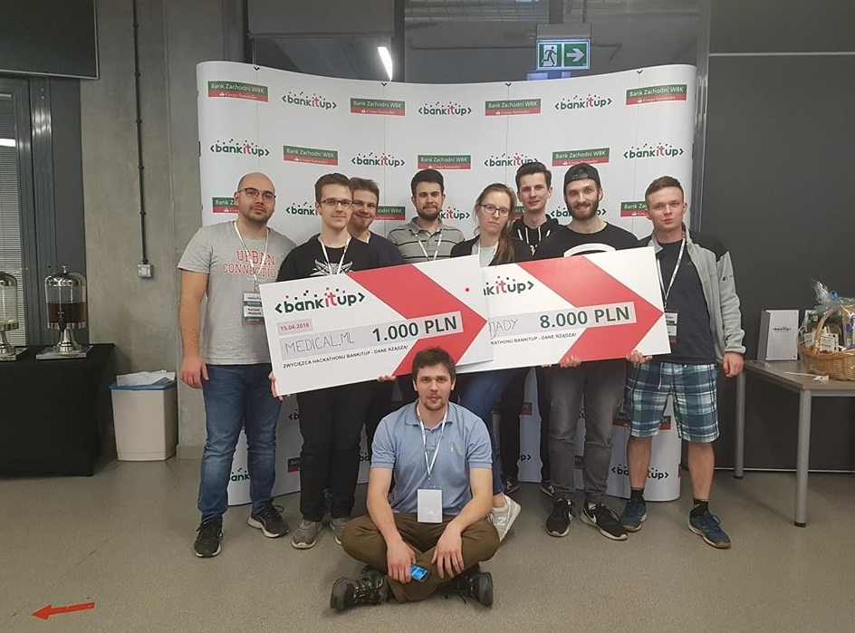
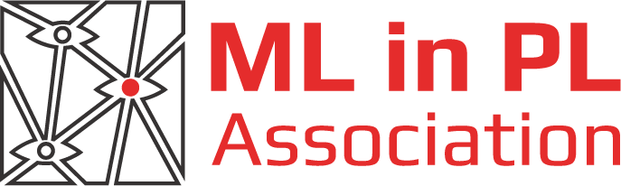

Czym się zajmujemy
Na co dzień pracujemy nad projektami na międzynarodowe konkursy oferowane przez platformy MICCAI i KAGGLE, wspólnie bierzemy udział w hackatonach, współpracujemy z wieloma ludźmi nauki i uczymy się wzajemnie poprzez serię wewnętrznych wykładów.
Medical.ML to organizacja aktywnych, zdolnych i otwartych ludzi, których łączy zamiłowanie do uczenia maszynowego i nowoczesnych technologii. Jeśli więc te tematy są Ci bliskie - zapraszamy, dziedzina rozwija się niesamowicie szybko, a my trzymamy rękę na pulsie
Nasi członkowie angażują się w komercyjne i społeczne projekty gdzie wykorzystują metody sztucznej inteligencji do rozwiązywania praktycznych probelemów
Zastosowania sztucznej inteligencji w wizji komputerowej dronów we współpacy z wrocławskim start-up-em BZBUAS


Udało nam się opracować konwolucyjną sieć neuronową, która na podstawie zdjęć USG wątroby potrafi zastąpić elastograf, rozpoznając zwłóknienie wątroby. Osiąga przy tym bardzo dobre rezultaty.

Wykrywanie chorych dzików na zdjęciach termowizyjnych oraz ich zliczanie


Dla zdobycie wiedzy startujemy w wielu konkursach data-science gdzie rywalizujemy z drużynami z całego świata
Dwuczęściowy konkurs polegający na detekcji artefaktów, oraz semantycznej segmentacji zdjęć uzyskanych z badań endoskopowych.
Strona konkursu: https://ead2020.grand-challenge.org

Przyporządkowywanie punktów na detektorach do trajektorii poszczególnych cząstek

Rozpoznawanie lodowców na zdjęciach satelitarnych
Drużyny składające się z członków koła zajęły I i III miejsce w hackatonie BankItUp dotyczącym analizy danych finansowych
Organizujemy również wspólne wyjazdy na konferencje tematycznie związane z działalnością koła. Przykładem jest konferencja ML in PL w Warszawie dotycząca nowości w dziedzinie uczenia maszynowego.
Strategiczna współpraca z Nvidią
Członkowie naszego koła mają dostęp do zdalnego komputera, na którym uczymy nasze modele. Dzięki współpracy koła z Nvidią jest on wyposażony w Nvidię Titan Xp.
Jeśli interesujesz się uczeniem maszynowym i chciałbyś dołączyć do grupy osób z którymi mógłbyś poszerzyć swoją wiedzę, zająć się większymi projektami i praktycznym wykorzystaniem nabytych informacji- zapraszamy!
Formularz zgłoszeniowy
Kontakt:
https://www.facebook.com/medical.ml